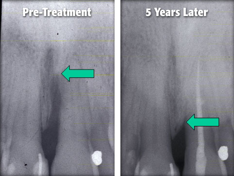

The main cause of periodontal disease is bacteria in the form of a sticky, colorless plaque that constantly forms on your teeth.
Your bone and gum tissue should fit snugly around your teeth like a turtleneck around your neck. When you have periodontal disease, this supporting tissue and bone is destroyed and pockets develop. Eventually too much bone is lost and the teeth will need to be extracted.
If you have already lost too much bone, Dr. Goteiner may recommend a regenerative procedure when the bone supporting your teeth has been destroyed. These procedures can reverse some of the damage by regenerating lost bone and tissue.
During this procedure, Dr. Goteiner folds back the gum tissue and removes the disease-causing bacteria. Membranes (filters), bone grafts or tissue- stimulating proteins can be used to encourage your body's natural ability to regenerate bone and tissue.
There are many options to enhance support for your teeth and to restore your bone to a healthy level. Dr. Goteiner and his staff will discuss your best options with you.

Using bone regeneration (pink arrow) and osteotomes, we were able to save the molar and place a larger implant (yellow arrow).